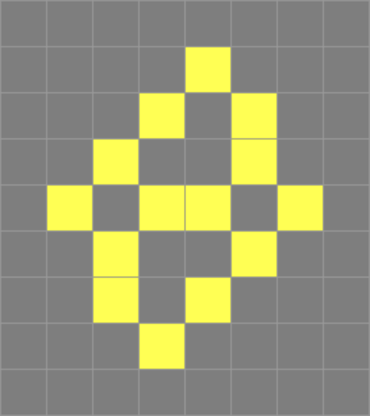

Conway's Game of Life
Abstract. I describe my findings on the Game of Life. I also ask a few questions on them.
Findings
 Figure 1: A long-lived pattern (LLP) of fourteen cells, evolving into ten stable units and two gliders after 270 steps.Questions
The Conway busy beaver
Consider a pattern that start with a fixed number of starting cells and halts (i.e. annihilates totally, leaves a clean slate, etc.). What is the maximum number of steps it can take before halting?
Since the Game of Life is turing complete, this question is similar to the busy beaver problem. Here I give some basic results.
| Starting cells | Steps to halt |
|---|---|
| 0 | 0 |
| 1 | 1 |
| 2 | 1 |
| 3 | 1 |
| 4 | 5 |